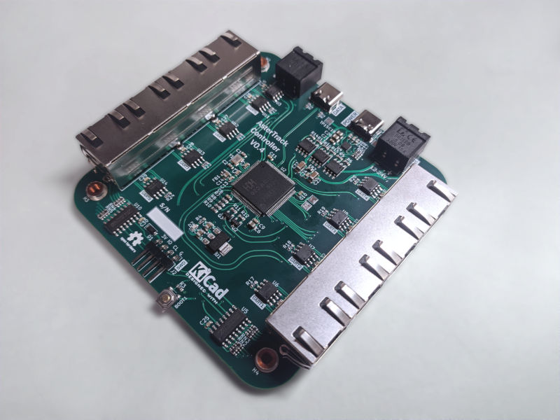

What is AsterTrack?
AsterTrack is a custom multi-camera system designed to track a set of markers in 3D space. This so-called optical tracking is commonly used for professional Motion Capture and VR setups, but usually costs multiple thousands of euros. AsterTrack aims to implement the same concept using much cheaper hardware, and pioneer a user-friendly multi-camera experience.The advantage over other consumer Tracking Systems for VR is that it is external and accurate like Lighthouse, while allowing for cheap and light passive trackers that users could create themselves, even from everyday objects.
How does it work?
There are three major components to the AsterTrack system:AsterTrack Cameras - Raspberry Pi based tracking cameras with onboard marker processing
AsterTrack Controller - Hub that synchronises the cameras and connects them to the PC
AsterTrack Configurator - PC Software that performs the tracking and interfacing
This system can track marker positions - both active markers (LEDs) as well as passive (retroreflective) markers - as well as fully tracked targets composed of unique sets of such markers, enabling rotation tracking without an IMU. Each AsterTrack Camera only sees these markers in 2D as bright dots, and by associating them between cameras and frames it is possible to infer their 3D position given multiple calibrated cameras.
Targets are seen by the cameras as a cluster of bright dots, just as asterisms are seen by a telescope, thus the name AsterTrack. Asterisms are small groups of stars in the sky, derived from the greek word for star, asteris. Humanity has assigned meaning to these 2D structures for a very long time, but their 3D position can be inferred only now through multiple viewpoints (parallax).
How is this possible?
The main goal is to keep the quality high while bringing the cost as low as possible.
The key to this is the processing hardware of the AsterTrack Cameras, without which all images would have to be processed on the host PC, which is infeasible at any meaningful quality and not scalable.
Instead, the processing happens on a Raspberry Pi Zero, which was commonly considered the cheapest Single Board Computer (SBC) on the market prior to the chip shortage.
Using low-level assembly code on the QPU, a high throughput and low processing latency has been achieved.
The OV9281-based cameras are global-shutter and externally synchronised, providing accurate tracking with ~1MP frames at 120Hz.
The AsterTrack Controller is functionally simple, but crucial to the low-latency communication between the Cameras and the host, and the synchronisation of the Cameras. The Controller communicates with the Cameras via UART over RS-422 (differential pairs) and with the PC over USB 2.0 HS. Ethernet with PoE wasn't chosen due to component costs and lacking user experience during setup.
The rest of the magic happens in the host software, including an easy-to-use calibration system and innovative tracking algorithms.
Calibration currently requires only one marker to be waved around in front of at least three AsterTrack Cameras (or two with the same lens).
After that, a constellation of markers can be calibrated as a target for 6-DOF tracking.
Targets can be created by the user, using retroreflective tape on any object or using infrared LEDs, as long as the constellation of markers is sufficiently unique.
This can be used to track nearly anything with little to no intrusion.
Roadmap
Hardware is mostly designed and verified.Software is nearly done, but a better target calibration is still being worked on.
The plan is to launch a crowdfunding campaign in 2023 and release sources and designs at that point.
Sign up to receive updates:
Prototypes in varying stages of development
All Hardware Design after 2021 by JX35
2023
Prototype Tracking Camera V0.3 with all final features

Prototype Tracking Controller V0.4 supports 8 cameras with USB-PD, USB 2.0 HS, and Sync & Power IO for larger setups
2022
Prototype Tracking Camera V0.2 with improved case design
Prototype Tracking Camera V0.2 has ESD protections, uses RS-422, a smaller camera module and more LEDs
Prototype Tracking Camera V0.1 uses custom PCBs and adds support for passive markers
2021
Early Prototype Tracking Cameras with minimal wiring and components
Early Target and Calibration Wand made from active markers (Infrared LEDs)
2019-2020
First proof-of-concept hardware, including Tracking Camera and Tracking Controller